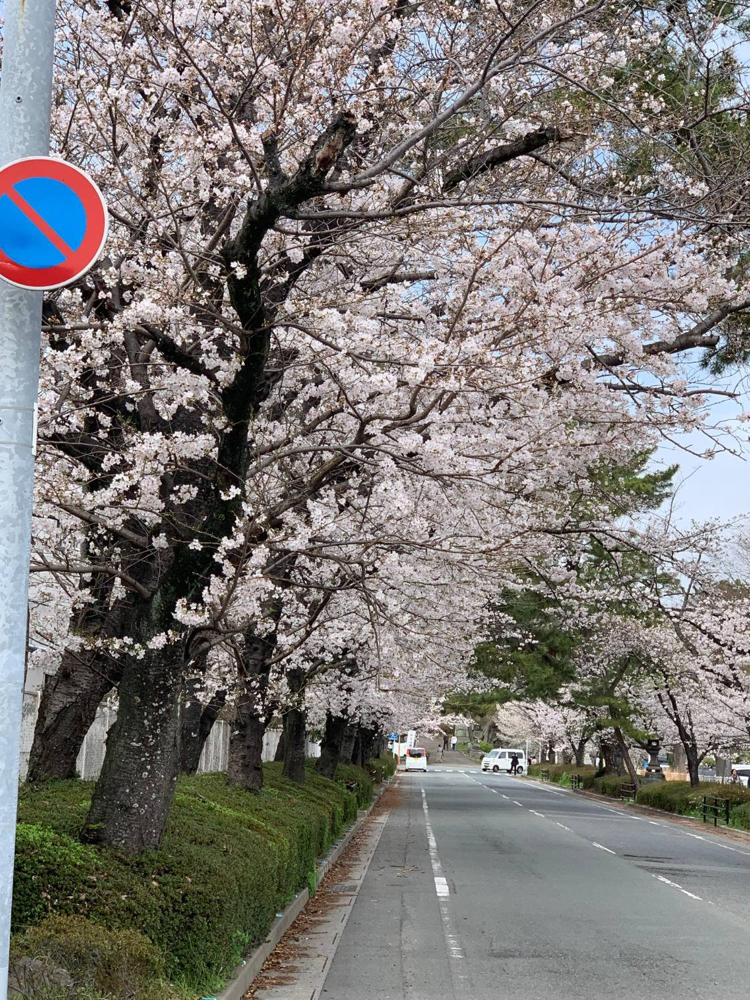
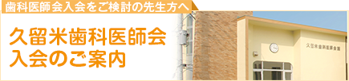

本文へ移動
一般社団法人
〒830-0013 福岡県久留米市櫛原町98
TEL 0942-32-7063
メニューを開く
メニューを閉じる
歯科医師会のご紹介
訪問歯科診療
休日診療
健診事業
地域の歯医者さん
スライドショーの一時停止と再開

久留米地域の皆様とともに
一般社団法人 久留米歯科医師会
休日診療の
ご案内
日曜・祝日の
当番医を
ご案内します
地域の
歯医者さん
地域から、
医院を
探せます
健診事業の
ご案内
乳幼児から
高齢者までの
歯科健診
訪問歯科診療の
ご案内
ご自宅・施設への
訪問診療
毎年恒例の、
歯の健康イベント
歯の
健康フェスタ
ポスター展は
こちら
見る
お知らせ・トピックス
2026年6月3日
令和８年度歯科助手講習会のお知らせ
2026年6月3日
令和８年度「歯の健康フェスタ」開催のお知らせ
イベント情報の一覧
受付歯科医院を探す
事業ごとに、受付をしている歯科医院を、地域別にご覧いただけます。
1歳半・
3歳児健診
フッ素塗布
歯っぴー
検診
周術期ケア
妊婦歯科
健診
そのほかのご案内

イベント
情報
歯科助手
講習会の
ご案内
久留米歯科
衛生専門学校